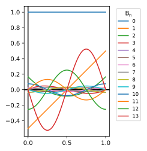

Bernoulli polynomials
It is usual to start from an “exponential”-type generating function. I will go in the opposite direction since I want to emphasize the desired properties, using the generating function (hopefully) to expedite the derivation of relations between the polynomials.
We have already met \(B_0(x)=1\) and \(B_1(x)=x-1/2\). We define the desired properties for further polynomials:
- \[B_0(x)=1\]
- \[\int\limits_0^1 B_k(x)dx=0,k>0\]
- \[\frac {dB_k}{dx}=B_k'=kB_{k-1}\]
These conditions are sufficient to generate the polynomial sequence. If you have the energy.
Although \(B_0\) is the only polynomial explicitly defined, \(B_1\) fairly easily results by integrating condition 3 with \(k=1\) and imposing condition 2. And so on.
The exponential generating function is \[G=\sum\limits_{k=0}^\infty \frac{t^k}{k!}B_k\] This depends on \(t,x\) but not \(k\).
If we differentiate with respect to \(x\), and use \(t\) as a parameter: \[G'=\sum\limits_{k=0}^\infty \frac{t^k}{k!}B_k'=\sum\limits_{k=1}^\infty \frac{t^k}{k!}kB_{k-1}=\sum\limits_{k=1}^\infty \frac{t^k}{(k-1)!}B_{k-1}=tG\] At the middle stage we can conveniently leave out the \(k=0\) term since \(B_0'=0\).
For fixed \(t\) we have to differential equation: \[\frac{dG}{dx}=tG\] with solution: \[G(x,t)=A(t)\exp(xt)\] The integration “constant” \(A\) is actually a function of \(t\) (only) as indicated. We can also fix \(A\) through imposing condition 2: \[\int\limits_0^1 G(x,t)dx=\sum\limits_{k=0}^\infty \int\limits_0^1\frac{t^k}{k!}B_k(x)dx=\int\limits_0^1 B_0(x)dx=1\] But also: \[\int\limits_0^1 G(x,t)dx=\int\limits_0^1 A(t)\exp(xt)dx=A(t)\left[\frac{\exp(xt)}{t}\right]_0^1=\frac{A(t)}t(\exp(t)-1)\] Equating and rearranging: \[A(t)=\frac t{\exp(t)-1}\] So finally: \[G(x,t)=\frac {t\exp(xt)}{\exp(t)-1}\] An expression that can be found far and wide, in books (e.g. Abramowitz and Stegun) and on the web (e.g. wikipedia, also the web updated version of Abramowitz and Stegun [NIST Digital Library of Mathematical Functions]).
By multiplying the generating function by the denominator and comparing terms we get a useful recurrence relation between polynomials: \[G(x,t)(\exp(t)-1)=\sum\limits_{k=0,l=1}^\infty \frac{t^k}{k!}B_k\frac{t^l}{l!}\] The \(l=0\) in the exponential expansion is skipped because it cancels against the \(-1\). Defining \(l+k=n+1\) and using this to replace the \(l\) sum and collect terms: \[G(x,t)(\exp(t)-1)=\sum\limits_{n=0}^\infty \frac{t^{n+1}}{(n+1)!}\sum\limits_{k=0}^n \frac{(n+1)!B_k}{k!(n-k+1)!}\] Remembering the binomial expansion symbol: \[G(x,t)(\exp(t)-1)=\sum\limits_{n=0}^\infty \frac{t^{n+1}}{(n+1)!}\sum\limits_{k=0}^n \binom{n+1}kB_k\]
Looking at our formula for the generating function, this must equal: \[t\exp(xt)=\sum\limits_{n=0}^\infty \frac{x^nt^{n+1}}{n!}\] Making the suitable equation and comparing terms in \(t^{n+1}\): \[(n+1)x^n=\sum\limits_{k=0}^n \binom{n+1}kB_k\] We can separate out the \(B_n\) term to give it terms of the previous polynomials: \[\binom{n+1}{n}B_n=(n+1)B_n=(n+1)x^n-\sum\limits_{k=0}^{n-1} \binom{n+1}kB_k\] We note that the leading term of \(B_n\) is \(x^n\), since the other polynomials are lower order. Tidying: \[B_n=x^n-\sum\limits_{k=0}^{n-1} \binom{n+1}k\frac{B_k}{n+1}\]
We plot the \(B_n\) between 0 and 1, with \(n\) up to 13:
I have read that the polynomials tend for large \(n\) to trigonometric functions (sine/cosine) multiplied by a large and increasing factor. From the plot, this looks plausible, and something I will probably look into at some point. Also when periodized into \(P_n(x)=B_n(\{x\})\) the resulting functions and their derivatives are smooth, except for \(P_1,P_2\). Initially for small \(n\), the function maxima reduce up to \(n=6\) and then start increasing.